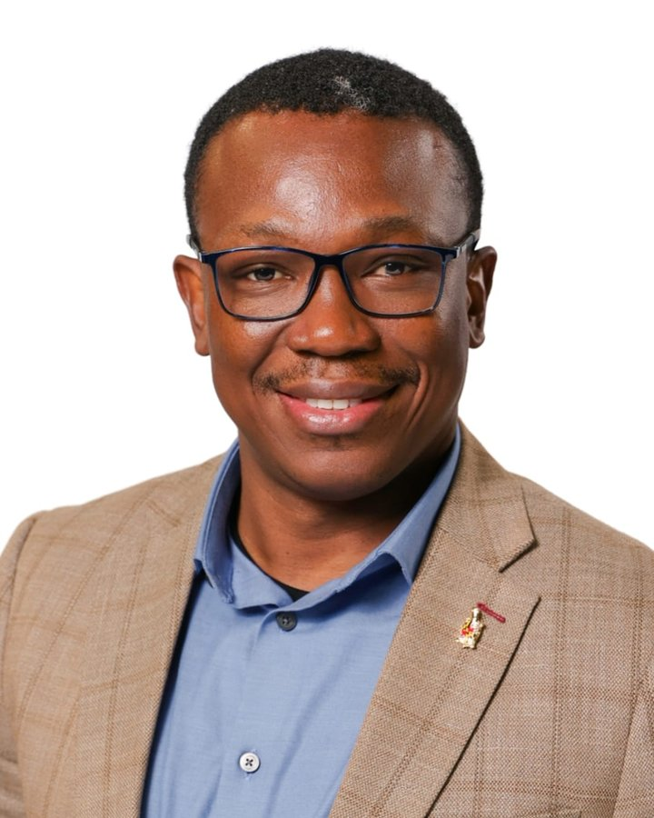

Anani Yao KuwornuABD, MPhil, MA, BA
Ph.D., Strategic Communication & Public Relations (Expected May 2027)
Department of Communication, University of Maryland, College Park
I study how institutions communicate in a crisis, and how publics respond. My research brings together crisis and risk communication, strategic public relations, and political communication, with sustained attention to Ghana and international development.
Before graduate school, I spent more than a decade in practice: as a public diplomacy officer at the U.S. Embassy in Accra, as development outreach and communications specialist for USAID's West Africa mission, and as senior communications advisor to Tullow Ghana, operator of the country's largest producing oil fields.
Research
Crisis Communication and Strategic Narratives in Public Diplomacy: Deconstructing the Narratives Around the U.S. Aid Withdrawal
Committee chaired by Dr. Nana Kwame Osei Fordjour, with Dr. Brooke Fisher Liu, Dr. Sun Young Lee, Dr. Carly Woods, and Dr. Sarah Elizabeth Croco.
My related work uses machine learning to trace two decades of Ghanaian flood coverage, examines incivility in online comments on Ghana's lithium deal, and studies how artificial intelligence is changing public relations practice and government communication in Africa.
Dissertation, publications and presentations →Research interests
- Crisis & risk communication
- Strategic communication & PR
- AI in public relations
- Political communication
- Public diplomacy
- Digital publics & incivility
- Computational text analysis
Selected publications
- 2026
- 2025
-
2026
Analysis of candidate speeches presented at the manifesto launch of the NDC and the NPP in Ghana
Teaching
I have taught ten sections as instructor of record at Maryland, from oral communication to public relations writing and social media. In COMM 353 New Media Writing for Public Relations, students spend the semester building a proposal for a real client, and each major assignment becomes a part of it.
Inclusive classroom environment is my highest-rated dimension in every course I have taught.
Professional experience
- 2008–2011Bank of Africa, AccraHuman Resources Officer
- 2011–2015U.S. Embassy, AccraPublic Diplomacy Officer
- 2015–2019USAID West AfricaDevelopment Outreach & Communications
- 2019–2023Tullow Ghana LimitedSenior Communications Advisor
- 2023–nowUniversity of MarylandDoctoral Candidate & Instructor
-
Senior Communications Advisor, Tullow Ghana Limited
2019 – 2023Directed reputation and issues management for the operator of the Jubilee and TEN offshore fields. Served as communications lead on the Incident Management Team through three major crisis events, and built a national network of more than 55 senior journalists and editors.
-
Development Outreach & Communications Specialist, USAID West Africa
2015 – 2019Managed communications for the regional mission with more than 15 U.S. Embassy Public Affairs Sections, and led communications for Feed the Future, PEPFAR, and engagement with the ECOWAS Commission.
-
Public Diplomacy Officer, U.S. Embassy Accra
2011 – 2015Founded the Ghana–U.S. Alumni Association, turning a dispersed exchange-program network into a governed organization.
Recent: Research Associate, Government & Public Affairs, at Terra Davis Consulting (summer 2026) and NABPAC (summer 2025), Washington, DC. The full history is in my CV.
Education
- Ph.D., Strategic Communication & Public Relations, University of Maryland (Expected May 2027)2027
- M.A., Development Communication, UniMAC, Accra2021
- M.Phil., Business Administration, University of Ghana Business School2012
- B.A., Philosophy & Theatre Arts, University of Ghana2005
Recognition
- High Impact Poster Award (People's Choice), ICRCC2026
- Dean's Fellowship, University of Maryland2023–27
- Faculty-Student Research Award, UMD College of Arts & Humanities2025–26
- Group Meritorious Award, USAID West Africa2015
Contact
yao.anani@gmail.com
University of Maryland
College Park, MD 20742